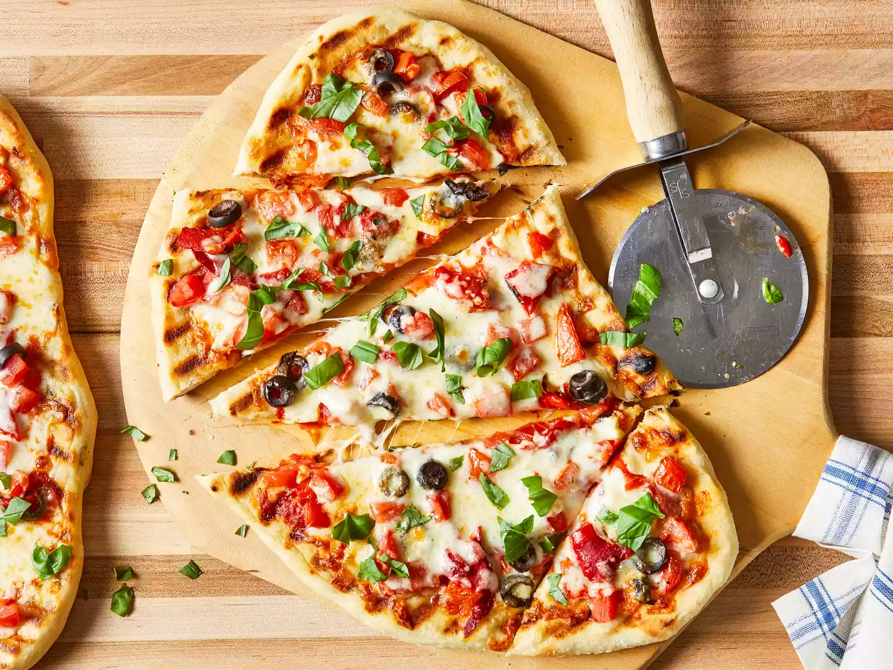

Pizza

Pizza on the grill
Pizza on the grill is a fantastic way to make pizza at home.
The heat of a hot grill is a perfect match for a professional pizza oven.
Learn the tricks for making and grilling pizza from scratch with this recipe.
Feel free to use your favorite toppings, but keep in mind not to overload the pizza.
Ingredients
- 1 cup warm water (110 degrees F/45 degrees C)
- 1 (.25 ounce) package active dry yeast
- 1 tablespoon olive oil
- 1 tablespoon chopped fresh basil
Steps
- Make dough: Pour warm water into a large bowl; dissolve yeast and sugar in warm water. Let stand until yeast softens and begins to form a creamy foam, about 5 to 10 minutes
- Mix in flour, 1 tablespoon olive oil, and salt until dough pulls away from the sides of the bowl.
- Turn onto a lightly floured surface. Knead until smooth, about 8 minutes.
- Place dough in a well-oiled bowl and cover with a damp cloth.